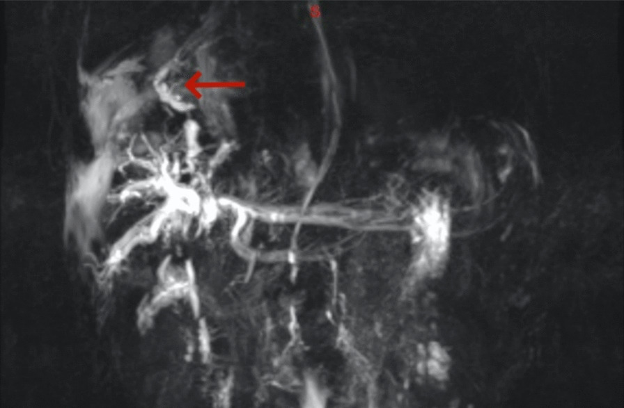
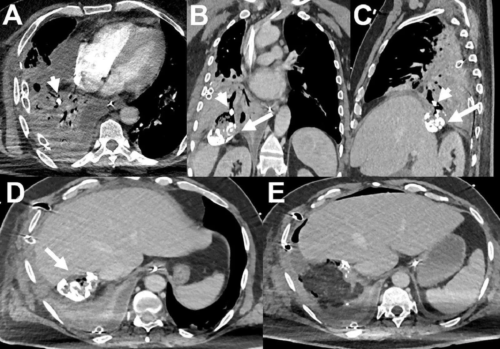
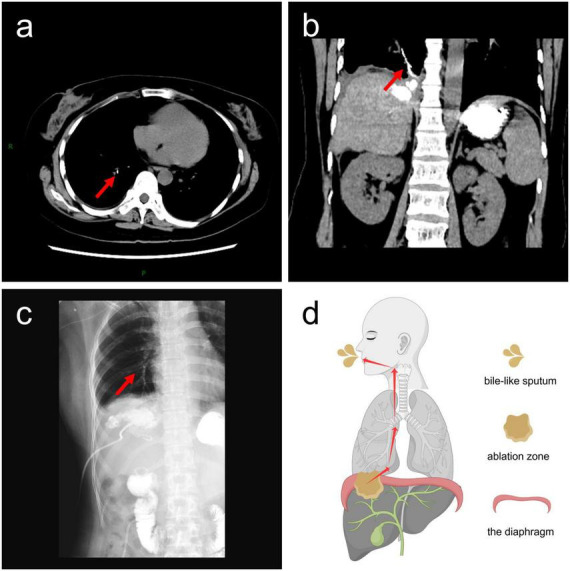
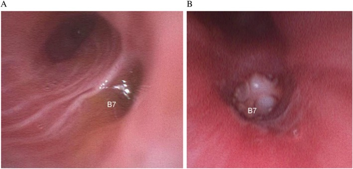
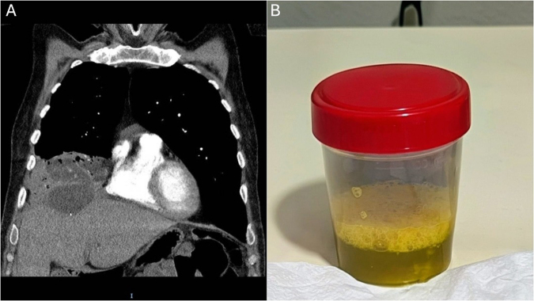

1824 — Rò mật–phế quản (bronchobiliary fistula): ho ra mật, MRCP/ERCP và bậc thang bít rò
Tags: pattern:ro pattern:ho-ra-mat pattern:dong-dac pattern:xep-phoi vung:gan vung:phoi vung:co-hoanh protocol:CT-bung-nguc protocol:MRCP protocol:ERCP protocol:noi-soi-phe-quan
Mức chắc chắn (certainty): tổng hợp y văn (literature synthesis) — ghép toàn văn 1 đoàn hệ 17 bệnh nhân trong 13 năm (BMC Surg 2026, PMC12781370, CC BY-NC-ND), 1 đoàn hệ 9 bệnh nhân BBF sau MWA/1.885 ca MWA (BMC Cancer 2025, PMC12512725, CC BY-NC-ND), 1 ca can thiệp bít rò bằng MWA qua da (Front Med 2026, PMC12907328, CC BY), 1 ca bít bằng vascular plug (Radiol Case Rep 2026, PMC12743410, CC BY-NC-ND), 1 loạt 4 ca bít phế quản chọn lọc (Respirol Case Rep 2024, PMC11289238, CC BY-NC-ND), 1 ca nút phế quản bằng Watanabe spigot (Respirol Case Rep 2025, PMC12566172, CC BY), 1 ca sán gan vỡ xuyên cơ hoành (Radiol Case Rep 2026, PMC13660178, CC BY), 1 ca biliptysis ẩn (Open Respir Arch 2026, PMC13196502, CC BY-NC-ND), 1 ca sau chấn thương gan (J Med Case Rep 2024, PMC11194872, CC BY) và 1 bài về HIDA Tc99m-mebrofenin (World J Nucl Med 2017, PMC5639450, CC BY-NC-SA). Không có thử nghiệm ngẫu nhiên; mọi khuyến nghị điều trị là hồi cứu/ca lẻ.
Ca mở đầu — “viêm phổi” mãi không khỏi: nam 62 tuổi, HCC, cắt phân thùy trước 2 tháng trước; nhập ICU vì viêm phổi nặng – suy hô hấp; nội soi phế quản thấy dịch mật vàng–xanh từ phế quản B7 phải. Đặt Watanabe spigot tại lỗ rò qua ống soi dùng một lần ngay tại giường; bệnh nhân cai máy ngày 12, ra viện ngày 25, không tái phát (PMC12566172). Bài chốt năm quyết định: (1) ho ra mật (biliptysis) là dấu hiệu đặc hiệu — nghĩ BBF trước khi nghĩ “viêm phổi”; (2) bộ ba ho + ho ra mật + sốt tái diễn gặp 100% ở 17 ca, nhưng CT/MRI chỉ thấy đường rò ở 52,9% — hình ảnh âm không loại trừ; (3) trung vị từ điều trị bệnh gan đến khi có triệu chứng là 10 tháng (0–64), và từ triệu chứng đến điều trị là 2 tháng — chậm trễ là nguyên nhân tử vong; (4) sau MWA gan, BBF gặp 0,48% (9/1.885), tất cả tổn thương ở VII/VIII sát vòm hoành; (5) nguyên tắc điều trị là GIẢI ÁP đường mật + bít lỗ rò: dẫn lưu mật (PTCD/ERCP) trước, bít phế quản (spigot/plug/keo) khi còn rò, mổ khi lành tính và bệnh nhân đủ sức.
1. Tổng quan bệnh học – cơ chế hình ảnh: vì sao mật chảy vào phế quản lại nguy hiểm
1.1 Định nghĩa, nguồn gốc và sinh lý bệnh
- BBF là đường thông bất thường giữa đường mật và cây phế quản, thường qua một khuyết cơ hoành phải. Bẩm sinh rất hiếm; phần lớn là mắc phải: sán gan (đặc biệt sau vỡ vào đường mật), sau cắt gan/ghép gan, chấn thương gan–ngực, TACE/RFA/MWA, hẹp/tắc đường mật do sỏi hoặc u (PMC12781370; PMC5639450).
- Vì sao rò không tự đóng: (a) chênh áp giữa đường mật và đường thở + áp lực âm trong lồng ngực hút dịch lên; (b) tắc nghẽn đường mật dưới chỗ rò (sỏi, hẹp, stent hẹp) làm mật luôn tìm đường thoát qua lỗ rò; (c) khuyết cơ hoành không tự khép; (d) ổ áp-xe/biloma dưới hoành tiếp tục nuôi đường rò. Vì vậy chỉ kháng sinh không bao giờ đóng rò — phải giải áp đường mật và xử lý ổ nhiễm.
- Vì sao mật gây tổn thương phổi nặng: muối mật là chất hoạt động bề mặt, phá surfactant, gây viêm phổi hóa học và hoại tử biểu mô phế quản; sau đó là bội nhiễm vi khuẩn đường mật (70% cấy đờm dương tính trong loạt 17 ca). Hậu quả: xẹp phổi, áp-xe phổi, tràn dịch/tràn mủ màng phổi, suy hô hấp, nhiễm khuẩn huyết.
- Vì sao chẩn đoán muộn: triệu chứng giống viêm phổi/áp-xe; đờm vàng–xanh bị coi là “đờm mủ”; bệnh nhân ung thư gan lại đang có nhiều lý do khác để sốt và ho. Trong loạt 17 ca, trung vị 10 tháng từ điều trị bệnh gan đến triệu chứng BBF, và 2 tháng từ triệu chứng đến điều trị (PMC12781370).
1.2 Ngưỡng định lượng nằm lòng
| Đại lượng | Số liệu | Ý nghĩa | Nguồn |
|---|---|---|---|
| BBF sau MWA gan | 9/1.885 = 0,48% | Biến chứng hiếm nhưng có thật; cần biết để theo dõi | PMC12512725 |
| Vị trí u khi BBF sau MWA | VII 33,3%, VIII 66,7% — tất cả sát vòm hoành | U sát cơ hoành là yếu tố nguy cơ chính | PMC12512725 |
| Kích thước u trong loạt BBF sau MWA | 62,5% u 4–5 cm; 87,5% đốt nhiều điểm; 62,5% dùng 2 kim | Đốt rộng + nhiều điểm → nguy cơ cao hơn | PMC12512725 |
| Thời gian từ điều trị gan đến triệu chứng | trung vị 10 tháng (0–64) | Có thể xuất hiện rất muộn, sau khi đã “ổn định” | PMC12781370 |
| Thời gian từ triệu chứng đến điều trị | trung vị 2 tháng (0–6) | Chẩn đoán muộn là điểm can thiệp được | PMC12781370 |
| Bộ ba triệu chứng | ho + ho ra mật + sốt tái diễn 100% (17/17) | Tam chứng thực hành, không phải “hiếm gặp” | PMC12781370 |
| Sốt | 77,8% (7/9) ở loạt sau MWA | Dễ bị quy cho viêm phổi | PMC12512725 |
| Tràn dịch màng phổi | 76,5% (13/17); viêm phổi + tràn dịch 100% (9/9) | Hình ảnh “viêm phổi” luôn kèm dịch | PMC12781370; PMC12512725 |
| Giãn đường mật | 94,1% (16/17) | Dấu hiệu gián tiếp rất mạnh | PMC12781370 |
| Rò mật trên hình ảnh | 52,9% (9/17) với CT/MRI; cholangiography 10/14 = 71,4% khi được làm | Hình ảnh âm không loại trừ | PMC12781370 |
| Cấy đờm | 70% (7/10) có vi khuẩn | Bội nhiễm thường gặp, không loại trừ BBF | PMC12781370 |
| Tử vong | 47,1% (8/17); 2 ca chết trực tiếp do BBF (nhiễm khuẩn huyết/suy gan) | Bệnh nặng, tiên lượng xấu | PMC12781370 |
| Sputum bilirubin | 3/3 dương tính; dịch màng phổi bilirubin 2/2 dương tính | Xét nghiệm rẻ, đặc hiệu, ít được làm | PMC12781370; PMC12512725 |
1.3 Vì sao hình ảnh lại “giống viêm phổi” và đâu là dấu hiệu chốt
- Đông đặc/xẹp phổi thùy dưới phải là hình ảnh thường gặp nhất, do mật gây viêm hóa học và xẹp phổi; có thể có mức khí–dịch trong hang/áp-xe hoặc dày màng phổi. Vì vậy phim/CT đầu tiên hay được đọc là “viêm phổi + tràn dịch”.
- Dấu hiệu chốt trên CT: khuyết cơ hoành phải + đường rò từ gan/đường mật xuyên qua cơ hoành vào phế quản thùy dưới phải; có thể thấy khí trong ổ gan/biloma, dịch quanh gan, giãn đường mật trong gan, và đôi khi vật liệu cản quang/đờ mật trong lòng phế quản (PMC13660178; PMC12907328).
- Vì sao CT/MRI chỉ thấy 52,9%: đường rò nhỏ, dính vào cơ hoành, bị che bởi xẹp phổi/áp-xe; cần MPR mỏng theo mặt phẳng đứng dọc và thì tĩnh mạch cửa, không chỉ đọc lát ngang. Ca sán gan vỡ cho thấy bong bóng khí mới trong nang vôi hóa + mảnh vôi trong lòng phế quản là dấu hiệu gián tiếp rất mạnh (PMC13660178).
- Vì sao MRCP hữu ích: dịch mật rất sáng trên chuỗi xung T2 nặng (heavily T2-weighted) → thấy đường rò sáng nối đường mật với phế quản, đồng thời đánh giá hẹp/tắc đường mật — yếu tố quyết định phải giải áp. Trong loạt sau MWA, MRI chỉ thấy rò ở 1/9, nên MRCP bình thường vẫn không loại trừ (PMC12512725).

Ảnh MRCP (T2 nặng) sau chấn thương gan: đường rò sáng nối đường mật với cây phế quản (mũi tên đỏ). Nguồn: J Med Case Rep 2024, PMC11194872, CC BY 4.0.- HIDA (99mTc-mebrofenin): đồng vị bài tiết vào đường mật, nếu thấy hoạt độ phóng xạ trong phổi thì xác nhận rò mà không cần chọc; hữu ích khi bệnh nhân không làm được ERCP/PTC. Chưa có độ nhạy gộp đáng tin cậy — chỉ là bằng chứng định tính (PMC5639450).
2. Mẫu hình + chẩn đoán phân biệt theo vị trí (gamut)
- Mẫu hình “đông đặc thùy dưới phải + tràn dịch + ho ra mật”: BBF; áp-xe phổi; viêm phổi hít; áp-xe gan vỡ vào phổi; rò phế quản–màng phổi (bronchopleural fistula); vỡ nang sán vào phế quản.
- Gamut theo nguồn gốc (rất thực dụng):
- Sán gan (hydatid): nang vôi hóa ở vòm gan, vỡ xuyên cơ hoành; đờm có thể “nước muối”/màng nang, sau đó mật vàng–xanh; nguy cơ sốc phản vệ nếu vỡ (bài 934).
- Sau cắt gan/ghép gan: rò miệng nối đường mật hoặc mặt cắt gan, thường kèm biloma/áp-xe dưới hoành; thời gian có thể vài tuần đến vài năm.
- Sau đốt nhiệt (RFA/MWA): tổn thương sát vòm hoành, đốt rộng/nhiều điểm; BBF xuất hiện sau 1–12 tháng.
- Sau TACE: hoại tử u + thiếu máu đường mật → rò; thường ở HCC.
- Tắc mật do sỏi/hẹp/u: áp lực đường mật cao “đẩy” mật qua lỗ rò; phải giải áp mới đóng được.
- Chấn thương gan–ngực: vỡ gan + rách cơ hoành; trẻ em và người trẻ.
- Bẩm sinh: rất hiếm, thường ở trẻ nhỏ, có thể kèm dị tật đường mật.
- Gamut theo màu đờm: vàng–xanh, vị đắng = mật; nâu “sốt cà chua” = áp-xe amip; nước muối/màng trắng = nang sán; mủ hôi = áp-xe phổi; bọt hồng = phù phổi.
3. Bảng so sánh phân biệt (ma trận đối chiếu)
| Thực thể (entity) | Hình ảnh điển hình | Chốt vào (rule-in) | Chốt loại (rule-out) | Gợi ý xác nhận |
|---|---|---|---|---|
| Rò mật–phế quản (BBF) | Đông đặc/xẹp thùy dưới phải + tràn dịch; khuyết cơ hoành + đường rò từ gan vào phế quản; giãn đường mật | Ho ra mật vàng–xanh + bilirubin trong đờm/dịch rửa + đường rò trên CT/MRCP/cholangiography | Đờm không có mật, không có bệnh gan mật → nghĩ nguyên nhân phổi | Sputum bilirubin, nội soi phế quản, MRCP, ERCP/PTC, HIDA |
| Áp-xe phổi | Hang + mức khí–dịch, thành dày, đông đặc quanh; không có đường rò xuyên hoành | Sốt + đờm mủ hôi + hang có mức dịch | Đờm vàng–xanh vị đắng + bệnh gan mật → nghĩ BBF | Cấy đờm, CT ngực; soi phế quản |
| Rò phế quản–màng phổi / empyema | Tràn dịch màng phổi có khí, dày màng phổi; đường rò trong khoang màng phổi | Tràn mủ + khí trong khoang màng phổi | Dịch màng phổi có bilirubin cao + tổn thương gan → nghĩ rò mật | Bilirubin dịch màng phổi, CT, dẫn lưu |
| Áp-xe gan vỡ vào phổi | Ổ giảm tỷ trọng trong gan + khí, dày cơ hoành, đông đặc phổi kề | Ổ gan + sốt + đau hạ sườn phải | Bệnh nhân không có ổ gan, đờm mật rõ → BBF | CT bụng, siêu âm, cấy máu |
| Áp-xe amip vỡ vào phổi | Ổ gan phải sát hoành, đờm nâu “sốt cà chua” | Đờm nâu + huyết thanh amip + ổ gan | Đờm vàng–xanh + tiền sử can thiệp gan → BBF | Huyết thanh/kháng nguyên amip, CT |
| Vỡ nang sán vào phế quản | Nang vôi hóa ở vòm gan, khí trong nang, mảnh vôi/màng trong phế quản | Nang vôi + khí mới trong nang + mảnh màng/vôi trong đờm | Không có nang/sán huyết thanh → loại | CT, ELISA sán, nội soi phế quản |
| Viêm phổi hít | Đông đặc phân thùy dưới, phụ thuộc tư thế; không có đường rò | Bối cảnh sặc + đông đặc phụ thuộc | Đờm mật + bệnh gan mật → không phải đơn thuần | Nuốt cản quang, nội soi |

Hình 1 — (A) khí mới trong nang sán vôi hóa ở vòm gan + mảnh vôi trong lòng phế quản (đầu mũi tên); (B, C) MPR đứng dọc cho thấy đường rò xuyên khuyết cơ hoành phải; (D) khí trong nang sau khi rò; (E) sau mổ. Nguồn: Radiol Case Rep 2026, PMC13660178, CC BY 4.0; giữ nguyên nhãn A–E.- Điểm chốt: không có dấu hiệu hình ảnh nào đủ một mình; màu/vị đờm + bilirubin trong đờm là “chốt vào” rẻ nhất, còn đường rò xuyên cơ hoành là chốt định vị để can thiệp.
4. Protocol chụp + hệ phân độ/điểm chuẩn hóa
4.1 Chẩn đoán theo bậc thang
| Bước | Việc làm | Số liệu/ngưỡng | Cạm bẫy |
|---|---|---|---|
| 1 | Hỏi màu, vị, số lượng đờm; hỏi tiền sử gan mật/can thiệp | vàng–xanh, đắng; ho + sốt tái diễn | Coi là “đờm mủ” |
| 2 | Bilirubin trong đờm/dịch rửa (và dịch màng phổi nếu có) | Dương tính là chốt; 3/3 và 2/2 trong loạt | Ít được làm → bỏ sót |
| 3 | CT ngực + bụng có cản quang, lát ≤ 1 mm, MPR coronal/sagittal | Tìm khuyết cơ hoành, đường rò, giãn đường mật (94,1%), áp-xe/biloma | Chỉ đọc lát ngang → bỏ đường rò |
| 4 | MRCP (T2 nặng) hoặc HIDA nếu CT không rõ | Đường rò sáng; HIDA thấy đồng vị trong phổi | MRCP âm không loại trừ (1/9 ca sau MWA) |
| 5 | Nội soi phế quản | Thấy mật vàng–xanh chảy từ một phân thùy (thường B7/B8 phải) | Cần soi đúng lúc đang ho/rò |
| 6 | ERCP/PTC | Thấy cản quang từ đường mật vào phế quản; đồng thời giải áp | Chỉ thấy 71,4% khi làm; có thể bỏ sót đường rò nhỏ |

Hình 2 — (a) CT ngang thấy đường rò (mũi tên đỏ); (b) MPR coronal thấy cản quang trong đường rò; (c) X-quang sau bơm cản quang qua dẫn lưu; (d) sơ đồ đường mật–phế quản. Nguồn: Front Med 2026, PMC12907328, CC BY 4.0; giữ nguyên nhãn a–d.4.2 Điều trị — bậc thang “giải áp trước, bít sau”
| Bậc | Can thiệp | Chỉ định | Kết quả đã báo | Lưu ý |
|---|---|---|---|---|
| 1 | Kháng sinh + dẫn lưu ổ áp-xe/màng phổi | Mọi ca; ổ nhiễm rõ | Giảm nhiễm trùng, tạo điều kiện đóng rò | Không đóng rò đơn thuần |
| 2 | Giải áp đường mật: PTCD hoặc ERCP (ENBD/stent) | Tắc mật, giãn đường mật, rò còn hoạt động | Loạt 17 ca: 10/11 ca can thiệp tối thiểu được giảm triệu chứng; loạt sau MWA: PTCD 3/5 hết triệu chứng, ERBD 2/5 đóng rò | Đây là bước bắt buộc trước khi bít |
| 3 | Bít phế quản chọn lọc (spigot, vascular plug, keo/coil) | Rò dai dẳng dù đã giải áp; bệnh nhân yếu | SBO 3/4 = 75%; plug 1 ca; spigot 1 ca (cai máy ngày 12) | Có thể thất bại: 2/2 ca trong loạt sau MWA |
| 4 | MWA đường rò qua da | Rò nhỏ, đường đi rõ, không mổ được | 1 ca: 40 W × 7 phút, đóng hoàn toàn | Mới, chưa có theo dõi dài |
| 5 | Mổ (cắt đường rò + vá cơ hoành + cắt phổi/gan tổn thương) | Lành tính, rò phức tạp, thất bại các bậc trên | 6 ca: 3 sống > 24 tháng, 3 tử vong (1 do BBF/suy gan) | Chọn bệnh nhân kỹ; ở ung thư tiến triển thường chỉ giảm nhẹ |

Hình 3 — (A) mật vàng–xanh chảy từ phế quản B7 phải; (B) Watanabe spigot đặt tại lỗ rò. Nguồn: Respirol Case Rep 2025, PMC12566172, CC BY 4.0; giữ nguyên nhãn A–B.flowchart TD
A[Ho ra mật vàng xanh + bệnh gan mật] --> B[Xác nhận: bilirubin đờm + CT ngực bụng + nội soi phế quản]
B --> C[Kháng sinh + dẫn lưu ổ nhiễm]
C --> D{Đường mật có tắc hoặc giãn?}
D -->|Có| E[PTCD hoặc ERCP stent ENBD]
D -->|Không| F{Đã kiểm soát nhiễm và còn rò?}
E --> F
F -->|Không còn rò| G[Theo dõi lâm sàng + CT]
F -->|Còn rò| H[Bít phế quản chọn lọc: spigot plug keo]
H --> I{Đóng rò sau 2 tuần?}
I -->|Có| G
I -->|Không| J{Bệnh lành tính và đủ sức mổ?}
J -->|Có| K[Mổ cắt đường rò vá cơ hoành]
J -->|Không| L[MWA đường rò hoặc chăm sóc giảm nhẹ]
- Không có RADS/score được thẩm định cho BBF. Phân tầng thực hành dựa trên 3 trục: (1) nguồn gốc lành/ác; (2) mức nhiễm trùng (áp-xe, mủ màng phổi, nhiễm khuẩn huyết); (3) có tắc mật hay không — vì tắc mật là yếu tố quyết định phải giải áp trước.
- Theo dõi: CT ngực–bụng 1–3 tháng sau can thiệp; nội soi phế quản kiểm tra nếu còn ho ra mật; đánh giá lại đường mật bằng MRCP/ERCP nếu rò tái phát.
5. Biến thể bình thường và cạm bẫy
- “Viêm phổi” không đáp ứng kháng sinh + tràn dịch kéo dài ở người có tiền sử gan mật/can thiệp gan: phải hỏi màu đờm và làm bilirubin đờm — chi phí thấp, đặc hiệu cao.
- CT/MRI âm không loại trừ: chỉ 52,9% thấy đường rò; trong loạt sau MWA, MRI chỉ thấy 1/9. Nếu lâm sàng mạnh, làm nội soi phế quản hoặc cholangiography.
- Đừng bỏ qua giãn đường mật: 94,1% ca có giãn đường mật — đây là dấu hiệu gián tiếp nhắc phải giải áp.
- Đờm vàng–xanh không phải lúc nào cũng là mật: nhiễm Pseudomonas có thể xanh; nhưng vị đắng + bệnh gan mật + bilirubin dương mới là mật. Ngược lại, đờm “mủ” ở bệnh nhân sau đốt gan phải nghĩ BBF.
- Bít phế quản không phải viên đạn bạc: 2/2 ca trong loạt sau MWA thất bại; SBO 3/4 thành công. Cần chọn đúng lỗ rò và vẫn phải giải áp đường mật.
- Mổ ở ung thư tiến triển thường không kéo dài sống: trong 6 ca mổ, 3 sống > 24 tháng đều là bệnh lành tính; ở HCC tiến triển, mổ có thể chỉ để kiểm soát biến chứng.
- Sán gan vỡ: đừng chọc hút/đốt nang sán trước khi loại trừ BBF và dự phòng sốc phản vệ (bài 934); mảnh vôi/màng trong phế quản có thể gây tắc phế quản.
6. Tự lượng giá — Blind Quiz
Ca 1 — Nam 69 tuổi, carcinoid ruột di căn gan, cắt gan trước đó; nhập viện vì “viêm phổi hang hai đáy phổi” và suy hô hấp; sau đó ho ra đờm vàng–xanh.

- Hỏi: triệu chứng nào là dấu hiệu đặc hiệu? Ba chẩn đoán phân biệt? Xét nghiệm rẻ nhất để xác nhận?
Bấm để hiện đáp án (findings + chẩn đoán)
- (A) CT coronal: giảm tỷ trọng/ổ dịch dưới hoành phải thông với đáy phổi; (B) đờm vàng–xanh, nhầy — biliptysis.
- Phân biệt: BBF, áp-xe phổi, viêm phổi hít; kèm rò màng phổi.
- Xác nhận: bilirubin trong đờm (hoặc dịch rửa phế quản), rồi nội soi phế quản thấy mật chảy từ một phân thùy; CT/MRCP để tìm đường rò và tắc mật.
- Nguồn: Open Respir Arch 2026, PMC13196502, CC BY-NC-ND 4.0.
Ca 2 — Nam 61 tuổi, sốt–khó thở–đau ngực phải; CT đầu tiên đọc “viêm phổi + tràn dịch”, kháng sinh và dẫn lưu không đỡ.
- Hỏi: dấu hiệu nào trên CT gợi ý nguồn gan? Vì sao điều trị “viêm phổi” thất bại? Kế hoạch xử trí?
Bấm để hiện đáp án (findings + chẩn đoán)
- Nang vôi hóa ở vòm gan với khí mới trong nang; mảnh vôi trong lòng phế quản thùy dưới phải; MPR cho thấy đường rò xuyên khuyết cơ hoành.
- Điều trị viêm phổi thất bại vì vẫn còn nguồn mật và ổ nang dưới hoành.
- Xử trí: kháng sinh + dẫn lưu, đánh giá đường mật; mổ cắt nang/đường rò + vá cơ hoành (ca này đã mổ); dự phòng sốc phản vệ nếu còn nang sán.
- Nguồn: Radiol Case Rep 2026, PMC13660178, CC BY 4.0.
Ca 3 — Nam 62 tuổi sau cắt phân thùy trước vì HCC, ICU, thở máy; nội soi thấy mật từ B7.
- Hỏi: chẩn đoán? Vì sao chọn bít phế quản thay vì mổ? Kết cục và theo dõi?
Bấm để hiện đáp án (findings + chẩn đoán)
- (A) mật vàng–xanh chảy từ B7 phải = BBF; (B) Watanabe spigot bít lỗ rò.
- Chọn bít vì bệnh nhân nguy kịch, không vận chuyển/mổ được; đặt ngay tại giường qua ống soi dùng một lần.
- Kết cục: cai máy ngày 12, ra viện ngày 25, không tái phát; vẫn cần theo dõi đường mật và nhiễm trùng.
- Nguồn: Respirol Case Rep 2025, PMC12566172, CC BY 4.0.
Bài liên quan chéo
- 1820 – Rò mật–màng phổi (bilothorax): bilirubin dịch, dẫn lưu + giải áp đường mật
- 1819 – Chảy máu tiêu hóa muộn do giả phình động mạch tạng
- 930 – Can thiệp ung thư gan: TACE, RFA/MWA & LI-RADS TRA
- 920 – Nút mạch cầm máu tiêu hóa, ho máu & chấn thương tạng
- 934 – Sốc phản vệ do vỡ nang sán khi can thiệp
- 100 – Tổng quan hệ Bụng
Không dùng để chẩn đoán độc lập khi chưa có người hướng dẫn.